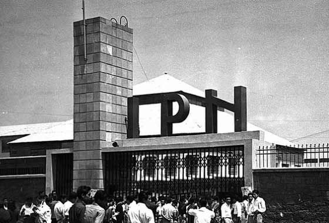
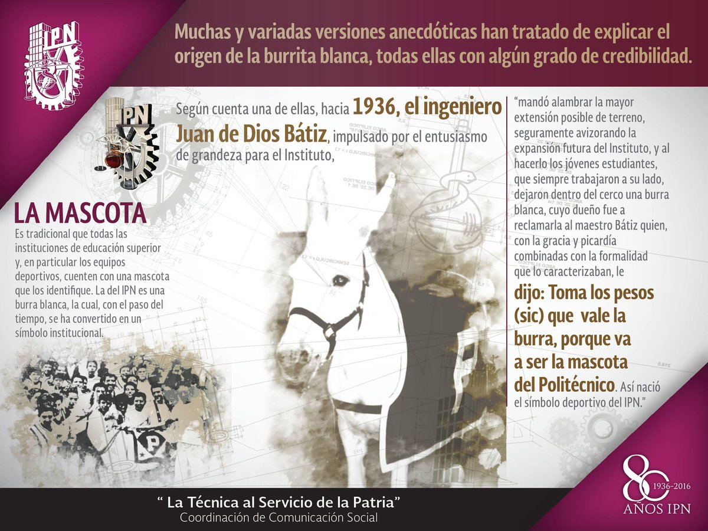

Identidad Politécnica
INSTITUTO POLITÉCNICO NACIONAL
CREACIÓN
El IPN es una Institución educativa del Estado creada para consolidar, a través de la educación, la Independencia Económica, Científica, Tecnológica, Cultural y Política para alcanzar el progreso social de la Nación, de acuerdo con los objetivos Históricos de la Revolución Mexicana, contenidos en la Constitución Política de los Estados Unidos Mexicanos. Información recuperada de la Ley Orgánica del IPN.
HISTORIA
En 1932 surgió la idea de integrar y estructurar un sistema de enseñanza técnica, proyecto en el cual participaron destacadamente el licenciado Narciso Bassols y los ingenieros Luis Enrique Erro y Carlos Vallejo Márquez. Sus conceptos se cristalizaron en 1936, gracias a Juan de Dios Bátiz, entonces senador de la República y al general Lázaro Cárdenas del Río, Presidente Constitucional de los Estados Unidos Mexicanos, proponiendo llevar a cabo los postulados de la Revolución Mexicana en materia educativa; dando así nacimiento a una sólida casa de estudios: el Instituto Politécnico Nacional.
Sus fundadores concibieron al Politécnico como un motor de desarrollo y espacio para la igualdad; apoyando por una parte, el proceso de industrialización del país y, por la otra, brindando alternativas educativas a todos los sectores sociales, en especial a los menos favorecidos.
VIDEOS: "Del sueño al Orgullo Politécnico"
|
Video |
Enlace |
|---|---|
|
CAPITULO 1 INTRODUCCIÓN
|
https://www.youtube.com/watch?v=4XFXhFNMiY0&list=PLlUNOQX6roAgLRaZfc3tdetY8TqNIwTLa&index=1&t=11s |
|
CÁPSULA 2 MEDIA SUPERIOR
|
|
|
CÁPSULA 3 SUPERIOR
|
https://www.youtube.com/watch?v=2VZq2puy7z4&list=PLlUNOQX6roAgLRaZfc3tdetY8TqNIwTLa&index=2 |
|
CÁPSULA 4 POSGRADOS
|
https://www.youtube.com/watch?v=TiA5wNznuts&list=PLlUNOQX6roAgLRaZfc3tdetY8TqNIwTLa&index=3 |
|
CÁPSULA 4 POSGRADOS
|
https://www.youtube.com/watch?v=TiA5wNznuts&list=PLlUNOQX6roAgLRaZfc3tdetY8TqNIwTLa&index=3 |
|
CÁPSULA 5 INVESTIGACIÓN
|
https://www.youtube.com/watch?v=f3h3W_YJj2c&list=PLlUNOQX6roAgLRaZfc3tdetY8TqNIwTLa&index=4 |
|
CÁPSULA 6 A INTERNACIONALIZACIÓN
|
https://www.youtube.com/watch?v=KhCC2XmCv0E&list=PLlUNOQX6roAgLRaZfc3tdetY8TqNIwTLa&index=5 |
|
CÁPSULA 6 B INTERNACIONALIZACIÓN
|
https://www.youtube.com/watch?v=ftN4yz25PP0&list=PLlUNOQX6roAgLRaZfc3tdetY8TqNIwTLa&index=6 |
|
CÁPSULA 7 INNOVACIÓN Y PATENTES
|
https://www.youtube.com/watch?v=iEx75nrlAz0&list=PLlUNOQX6roAgLRaZfc3tdetY8TqNIwTLa&index=7 |
|
CÁPSULA 8 MEDIOS IPN
|
https://www.youtube.com/watch?v=bnrf4U3HGJs&list=PLlUNOQX6roAgLRaZfc3tdetY8TqNIwTLa&index=8 |
ESCUDO Y LEMA
Fueron las inquietudes estudiantiles quienes tomaron la iniciativa para crear los símbolos que identificaran a la naciente institución politécnica. En los años 1944-1945 la Federación Nacional de Estudiantes Técnicos (FNET) lanzó una convocatoria para diseñar un escudo representativo de las escuelas que integraban el IPN. El primer lugar fue otorgado al alumno Armando López Fonseca quien con ayuda de su compañero Jorge Grajales, lograron que su diseño fuera el ganador.
El escudo fue modificado en 1948 conservando sus elementos originales...
HIMNO
Para obtener el Himno se convocó a un concurso abierto para su creación, pero no hubo eco al llamado. Luego de dos nuevas convocatorias, la poetisa Carmen de la Fuente resultó triunfadora del certamen y la Dirección General del Instituto le premió, el 15 de julio de 1961. Posteriormente, como la música aún no estaba elegida, se convocó a un certamen para poner música a la letra del himno del IPN, y resultó triunfador Armando González Domínguez, pianista reconocido y director de varias orquestas.
MASCOTA
Es tradición que en todas las instituciones de educación superior y particularmente los equipos deportivos, elijan una mascota, la del IPN es un burro blanco. La razón es muy particular; se conocen por tradición oral diferentes versiones que al paso del tiempo se funden entre la realidad y el mito. Una de las más conocidas, es la que al establecer los límites del terreno donde se estaba construyendo el IPN, en la Ex Hacienda de Santo Tomás por los años 30, quedó encerrada una burra blanca, al ser descubierta por los estudiantes e integrantes del primer equipo de fútbol americano la tomaron como su mascota. Con el paso de los años, la burra se convirtió en uno de los símbolos del Politécnico, fundamentalmente en el ámbito deportivo.
PORRA

Uno de los deportes que creció junto con el Politécnico fue el fútbol americano. Desde sus inicios ha dejado profunda huella entre sus seguidores, quienes para apoyarlo han entonado diferentes porras: desde el chiquitibum hasta el huélum; sin embargo, es éste el que ha permanecido vigente a través de un grito de fiesta para celebrar y cerrar todos los eventos.